<H2>
<CENTER><!--SELECTION--><!--/SELECTION-->
<TABLE cellSpacing=2 cellPadding=0 width="100%" border=0>
  <TBODY>
  <TR>
    <TD width="100%">
      <P>
      <TABLE cellSpacing=2 cellPadding=0 width="97%" border=0>
        <TBODY>
        <TR>
          <TD width="21%"><A 
            href="the_scoop_preview_01.html"></A></TD>
          <TD width="73%">
            <H2>
            <CENTER><FONT face=Arial color=#800040>Bandicoots Win 
            Mudbath;<BR>Defeat Ermine 114-98 to Win Cork Bowl 
            XI</FONT></CENTER></H2></TD>
          <TD width="6%"></TD></TR></TBODY></TABLE><FONT face=Arial 
      color=#800040>Saturday, December 15th was an emotional day at Corklestick 
      Park as Kirby Newell's "Flat Rock 2" jersey was retired into the Cork Bowl 
      Ring of Champions just before the start of Cork Bowl 11. The ceremony 
      preceeded the sloppiest Cork Bowl ever as rain pounded the field all week 
      leading up to the game and left the field a mudhole. In addition to the 
      wet, muddy field, temperatures hovered around 40 degrees all afternoon 
      making for very rough playing conditons.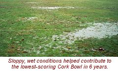</FONT></P>
      <P><FONT face=Arial color=#800040>"It was amazing," commented announcer 
      Tony Cork. "In all my years, I don't ever remember the field being that 
      soft. It was obviously not ideal conditions. It was definitely 
      quagmirish."</FONT></P>
      <P><FONT face=Arial color=#800040>It didn't take long for Cork Bowl XI to 
      get exciting. The Ermine started the game with the ball and quickly moved 
      out to midfield on the strength of Steve Sanders' arm. However, on 3rd and 
      5, Sanders was picked off by rookie Jeff Henney who took the ball into the 
      endzone for an early 7-0 lead for the Bandicoots. It would only get worse 
      for the Ermine. On their next play from scrimmage, Kevin Ryan and Henney 
      blitzed Sanders and sacked him in the endzone for a safety and a 9-0 lead. 
      On the ensuing possession, Willy Truitt found Kevin Ryan running free over 
      the middle for a long touchdown pass, and the the Bandicoot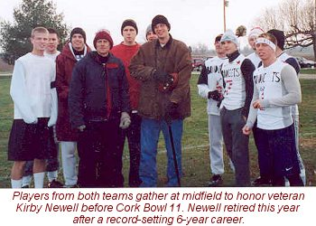s led 16-0 after running only one offensive 
      play.</FONT></P>
      <P><FONT face=Arial color=#800040>"Obviously, that start could have 
      demoralized our team," com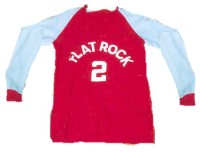mented Ermine receiver Patrick Cork. "But we 
      had veterans that were aware we still had over 95 minutes to play, so we 
      knew we had plenty of time to crawl back into the game."</FONT></P>
      <P><FONT face=Arial color=#800040>The Ermine did begin their march back as 
      Sanders found Patrick Cork for a touchdown on the next drive for the 
      Ermine's first score - with under 18 minutes to go in the quarter. Truitt 
      found Henney in the back of the endzone on the next possession to give the 
      Bandicoots a 23-7 lead, but a short touchdown from Sanders to Patrick 
      brought the lead back to 23-14. After another Truitt-to-Henney touchdown 
      to push the lead to 30-14, the Ermine found themselves deep in their own 
      territory with a crucial 4th-and-15 play. The Ermine went for it, and 
      Sanders fired a pass to Patrick Cork just past the first down marker for a 
      huge conversion. Josh Helton would complete the seven play drive with a 
      touchdown reception to cut the lead to 30-21. The Ermine defense finally 
      stiffened, and forced a Bandicoot punt. With a chance to get the lead down 
      to two points, the Ermine turned the ball right back to the 'Coots as 
      Sanders was again pressured and tried to flip a pass underhanded to Chris 
      Cork as he was being drug down. Kevin Ryan picked off the pass at midfield 
      and the Ermine wasted their first opportunity of the day. Again, however, 
      the Ermine defens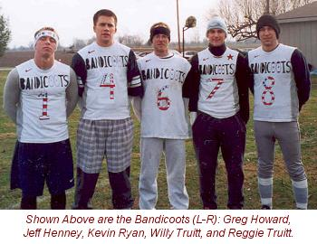e kept the Bandicoots out of the endzone to 
      end the first quarter, and after trailing 16-0 early, the Ermine trailed 
      just 30-21.</FONT></P>
      <P><FONT face=Arial color=#800040>Sanders was extremely accurate throwing 
      in the quarter, completing 13 of his 17 passes, but his 2 interceptions 
      cost the Ermine dearly. Patrick Cork began what would be a record-setting 
      offensive day with 8 receptions and a pair of touchdowns in the quarter. 
      Willy Truitt completed only 6-of-13 passes in the quarter, but three of 
      them went for touchdowns. "The real difference was just the first 2 
      minutes of the game," added Patrick. "After that, we handled their 
      pressure better and moved the ball well the rest of the 
      quarter."</FONT></P>
      <P><FONT face=Arial color=#800040>The Ermine started the 2nd quarter with 
      the ball, and the Bandicoots began to put a lot of pressure on the 
      quarterback sending Greg Howard on the blitz on most every snap. Sanders 
      still marched his team down the field for a score capped by a Ryan 
      Tomlinson touchdown grab. The Ermine had cut the lead down to 30-28. The 
      Bandicoots answered with a long drive of their own and Truitt found Greg 
      Howard for a one-yard touchdown catch and a 37-28 lead. The Ermine were 
      again backed deep in their own territory when Sanders found Patrick de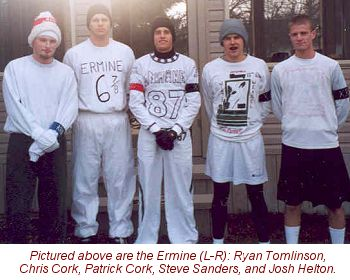ep down the field on 3rd and long, 
      and then found him again in the endzone on the next play to keep the lead 
      at two points. The Bandicoots would later convert a 4th-and-1 play to 
      Kevin Ryan, who took the ball down near the goal line where Truitt found 
      Howard again for a short touchdown pass and a 44-35 advantage. The Ermine 
      were forced to punt on their next possession - the first time they were 
      stopped since the early troubles - but Willy Truitt was picked off 
      downfield by Chris Cork on the next play.</FONT></P>
      <P><FONT face=Arial color=#800040>Sanders would find Helton again in the 
      endzone following the turnover, and the lead again was down to two at 
      44-42. The Bandicoots marched down the field to the Ermine 8 yard line, 
      but three consecutive dropped passes left them with a 4th-and-goal play. 
      Josh Helton batted down Willy Truitt's pass and the Ermine had their first 
      chance to take the lead with under 3 minutes to go in the half. After a 
      long run by Sanders for a first down, he found Patrick Cork again in the 
      endzone and the Ermine had come all the way back to take a 49-44 lead with 
      one minute to go in the half. The 'Coots would get all the way down to the 
      5 yard line, but Willy Truitt was rushed for the first time in the game, 
      and his pass was picked off by Sanders in the endzone with just 42 seconds 
      left. The Ermine went for the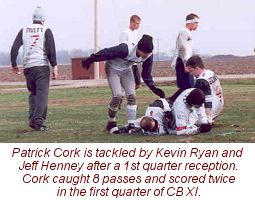 endzone on the next drive, and Patrick Cork broke 
      free and appeared to be held on the play, but no call was made and the 
      pass fell incomplete. Reggie Truitt stepped in front of a Sanders pass on 
      the next play and intercepted the ball near midfield with 11 seconds to go 
      in the half. The Bandicoots could not score though and the Ermine led 
      49-44 at halftime.</FONT></P>
      <P><FONT face=Arial color=#800040>"I thought the no-call on the long pass 
      was a huge play," remarked Patrick. "We had a chance to extend our lead to 
      nine points going into the half. That was the first of many close plays 
      that went against us all afternoon."</FONT></P>
      <P><FONT face=Arial color=#800040>The Ermine outscored the Bandicoots 
      28-14 in the period, and 49-28 after the quick 16-0 deficit. The 
      Bandicoots continued to struggle offensively in the 2nd quarter, as Willy 
      Truitt was just 17-34 at halftime with only 5 touchdown passes. Reggie 
      Truitt led the team with 7 catches, and Kevin Ryan and Jeff Henney each 
      had 4. Sanders was 22-for-32 with 7 touchdowns in the first half, but 
      threw 3 interceptions as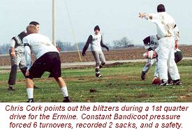 well. Patrick Cork caught 14 balls for 4 scores in 
      the half to lead all receivers.</FONT></P>
      <P><FONT face=Arial color=#800040>As the field continued to get sloppier, 
      the Bandicoots began the second half with the ball trailing by five 
      points. The Ermine defense continued to step up, and stopped the 'Coots on 
      a 4th and goal play. The Ermine would take the ball inside Bandicoot 
      territory, but were unable to convert a 4th and goal play of their own 
      when Patrick Cork bobbled a deep fade pattern in the back of the endzone 
      that would have given the Ermine a two score advantage. The Bandicoots 
      regained the lead at 51-49 on the ensuing possession as Kevin Ryan caught 
      a 4th-and-1 pass for a first down, and Jeff Henney grabbed his third 
      touchdown pass of the game. Again the Ermine struggled mightily to move 
      the ball against the relentless blitzing of the Bandicoots, but Sanders 
      was able to roll away from the rush and thread the double coverage on 
      Patrick Cork on a long 4th and goal play, to give the Ermine the lead at 
      56-51. "That was an amazing throw from the Colonel," added Patrick. "He 
      was being chased all day and couldn't scramble because of the mud, so he 
      had to just stay in the pocket and try to fin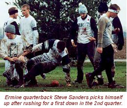d receivers."</FONT></P>
      <P><FONT face=Arial color=#800040>On the Bandicoots next play, Willy 
      Truitt appeared to lose the ball while making a pump-fake, and Chris Cork 
      pounced on the loose ball and rolled into the endzone for an apparent 
      touchdown. However, the play was ruled an incomplete pass, and the 
      Bandicoots kept possession. They were stopped yet again on a short 4th and 
      5 play near midfield, but the Ermine could not capitalize on the good 
      field position as Sanders' 4th down jump ball pass to Chris Cork was 
      batted away. With under 6 minutes remaining in the quarter, the teams had 
      combined for just 14 points.</FONT></P>
      <P><FONT face=Arial color=#800040>"It was so difficult to move the ball 
      that quarter," added Patrick. "They were putting tremendous pressure on 
      us, and our pass coverage on them was excellent as well. I think it took 
      everyone quite a long time to get back in the game after 
      halftime."</FONT></P>
      <P><FONT face=Arial color=#800040>The Bandicoots would finally find the 
      endzone as Truitt found Greg Howard in the flat for a 58-56 Bandicoot 
      lead. The next 2 minutes would determine the outcome of the game. With 
      under four minutes to go in the period, Jeff Henney stepped in front of a 
      Sanders pass to Patrick Cork and returned the interception for a touchdown 
      that pushed the lead to 65-56. On the following drive, Henney came with 
      he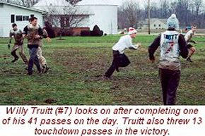avy pressure on the QB and tipped 
      Sanders' dump-off pass into the air, grabbed it, and stepped into the 
      endzone for his third defensive touchdown of the game and suddenly the 
      Ermine trailed 72-56.</FONT></P>
      <P><FONT face=Arial color=#800040>"We were a little shell-shocked at that 
      point," added Patrick. "We had worked so hard that quarter to generate 
      some offense and fight off their blitzing. We had completely shut them 
      down with our defense, and then on two plays they scored two touchdowns 
      without ever having the ball."</FONT></P>
      <P><FONT face=Arial color=#800040>"Of course the end of the third quarter 
      was a big moment in the game," remarked Henney. "Don't forget though, that 
      the Bandicoots were up 16-0 after only one offensive play in the first 
      quarter. I think the quick start, along with the constant pass rush, 
      especially by Greg Howard, really set the tone for whole game."</FONT></P>
      <P><FONT face=Arial color=#800040>With the Ermine in desperate need of a 
      score, they were forced to punt again from their own endzone to end the 
      quarter. In the period, the Ermine were able to complete only four passes 
      and couldn't find an answer to the Bandicoot defensive pressure. The 
      Bandicoot offense was unable to add much punch eithe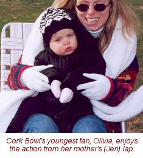r as Willy Truitt was just 8-for-17 in the quarter 
      with just two touchdown passes, but the two defensive scores helped the 
      Bandicoots outscore the Ermine 28-7 in the period.</FONT></P>
      <P><FONT face=Arial color=#800040>With the Bandicoots having the ball and 
      a 16 point lead to start the 4th quarter, the Ermine were desperate for a 
      turnover or a stop, but Willy Truitt found Kevin Ryan wide open on a 4th 
      and long play for a touchdown and the Bandicoots had their biggest 
      advantage as the lead was stretched to 79-56. With the Ermine running a 
      hurry-up offense, Sanders found Chris Cork on a jump ball play to cut the 
      score to 79-63, but the Bandicoots marched right down the field with a 
      number of underneath passing routes and Reggie Truitt scored his first 
      touchdown of the game for an 86-63 lead. Sanders found Patrick on the 
      first play of the next drive on a fly route for a quick score, and with 
      just four minutes off the clock in the quarter, the two teams had combined 
      for 28 points.</FONT></P>
      <P><FONT face=Arial color=#800040>"We were desperate for scores, so we 
      tried to get as many possessions as possible," said Chris Cork. "That was 
      our best offense of the day - just line up and go. It slowed down their 
      blitzing too because we were so quic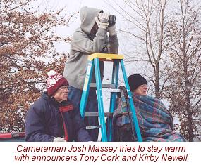k to get to the line and run a 
      play."</FONT></P>
      <P><FONT face=Arial color=#800040>Kevin Ryan was again the recipient of a 
      Willy Truitt touchdown pass on the next drive to push the lead to 93-70, 
      but the Ermine continued to fight back as Chris Cork caught his second 
      touchdown of the quarter to bring the lead back to 93-77 with sixteen 
      minutes to play. For the third time in the period, Truitt found Kevin Ryan 
      wide open in the flat for his third touchdown of the quarter, but Patrick 
      Cork answered with another TD grab from Sanders and the lead remained at 
      16 points at 100-84.</FONT></P>
      <P><FONT face=Arial color=#800040>"Our offense was great in the 4th, but 
      for the first time all day we couldn't stop them consistently," remarked 
      Patrick. "Kevin did all of the damage in the 4th quarter. He really came 
      up big with the game on the line."</FONT></P>
      <P><FONT face=Arial color=#800040>The Ermine finally forced the Bandicoots 
      to punt, and converted on a 4th and goal play with yet another Sanders to 
      Patrick Cork touchdown and suddenly the lead was back to single digits at 
      100-91 with under 8 minutes to pla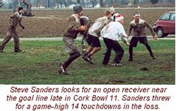y. With the Ermine again desperate for a turnover or 
      defensive stop, the Bandicoots dropped a pair of passes to set up a 3rd 
      and long from their own 3 yard line. Truitt found brother Reggie for a 
      completion to midfield, and then completed a huge fourth down pass to 
      Henney for the critical first down. Henney would later catch his fourth 
      touchdown of the game and put the game out of reach at 107-91. Howard and 
      Chris Cork would each add late touchdowns as the game ended with a score 
      of 114-98.</FONT></P>
      <P><FONT face=Arial color=#800040>After both teams failed to move the ball 
      at all in the third quarter, each quarterback threw 6 touchdown passes in 
      the fourth as Sanders completed 15-of-27 passes and Truitt completed 
      16-of-26. Patrick Cork added another 7 receptions in the period, but Kevin 
      Ryan came up huge down the stretch grabbing 6 balls and scoring 3 times in 
      the final frame.</FONT></P>
      <P><FONT face=Arial color=#800040>"We really had no answer for Kevin all 
      game," replied Patrick. "It seemed every time I looked up he was running 
      open for long gains. I felt we really contained the rest of their 
      receivers all game. He probably averaged close to 20 yards a catch. Kevin 
      Ryan was definitely the difference."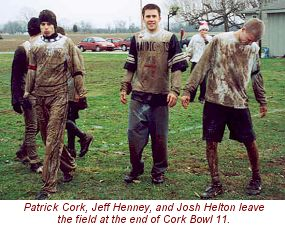</FONT></P>
      <P><FONT face=Arial color=#800040>Kevin finished the game with a career 
      and team high 13 receptions and 4 touchdowns (3 of them coming in the 4th 
      quarter). The 'Coots had a balanced offensive attack with Jeff Henney and 
      Reggie Truitt each catching 12 passes with Henney scoring 4 times and 
      Truitt once. Greg Howard was held to just 4 receptions for 4 scores in the 
      game. Willy Truitt fought off a rough first 3 quarters to finish 41-77 
      with 13 touchdowns and 2 interceptions.</FONT></P>
      <P><FONT face=Arial color=#800040>As for the Ermine, their offense was 
      more one-dimensional. "The way they were blitzing every play, we thought 
      the best way to handle that was to keep as many blockers in as possible 
      and hope to get Patrick open," commented Steve Sanders. "That's why people 
      like Chris didn't catch many passes - it was because he was blocking most 
      of the game. When we finally scrapped that strategy in the 4th, Chris 
      caught a bunch of passes."</FONT></P>
      <P><FONT face=Arial color=#800040>Patrick Cork fought off double coverage 
      all game and tied his own Cork Bowl record with 24 receptions, and broke 
      the sing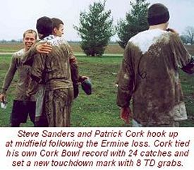le-game record for touchdowns 
      with 8, but was not satisfied with the individual numbers. "Sure that's a 
      lot of catches, but if I'm the only receiver on most of the plays, I 
      better catch that many. I think it hurt our offense more than it helped 
      because the defense was able to double cover me a lot and our other guys 
      didn't get into much of a rhythm catching the ball."</FONT></P>
      <P><FONT face=Arial color=#800040>Chris Cork finished strong after a very 
      quiet first half and caught 7 passes for 3 touchdowns. Josh Helton 
      responded from his poor game a year ago to grab 6 passes for 2 touchdowns 
      and Ryan Tomlinson had 4 catches and one score in the game. Steve Sanders 
      was picked off 6 times in the game, but still completed 41 of 74 passes 
      for 14 touchdowns. Sanders was forced to tuck the ball and run 15 times in 
      the game and was unable to use his speed to scramble because of the 
      horrible field conditions.</FONT></P>
      <P><FONT face=Arial color=#800040>"I thought the Colonel still played 
      great," added Patrick. "Considering the pressure he was under all game, 
      the fact that he completed over 55% of his passes was amazing. No other 
      quarterback to ever play in a Cork Bowl could have handled that pressure 
      as well as he did. Nobody. Only 2 of his interceptions were bad throws in 
      my opinion. The two he threw on the sideline were because of 
      miscommunication between me and him. The two he threw for touchdowns in 
      the 3rd quarter were just bad luck. On the first one, if he waits one more 
      second to throw the ball I probably score a touchdown and the other one 
      was tipped and just happened to fall right back to Henney. Needless to 
      say, it just wasn't our day. If a couple of those balls bounce our way, 
      who knows what would have happened."</FONT></P>
      <P><FONT face=Arial color=#800040>One main factor was the blitzes the 
      Bandicoots threw at the Ermine. They kept Sanders from picking out a 
      receiver and forced him into some bad throws. They blitzed on nearly 65% 
      of the plays during the game."I thought the difference was Greg and his 
      pressure on Steve," responded Ryan Tomlins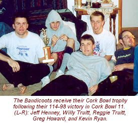on. Because the field was so soft, Sanders was a 
      sitting duck in the pocket and had to tuck the ball and run much more than 
      he would have liked. The Ermine, on the other hand, didn't put any 
      pressure on Willy Truitt. "We didn't blitz them the entire game because we 
      couldn't afford to bring any of our cover guys," added Patrick. "We were 
      playing such good man-to-man defense that we didn't feel the need to 
      pressure them. Plus, they had more weapons defensively and could afford to 
      bring Greg or Jeff knowing that they had enough other guys that could 
      cover. Not counting turnovers, we turned them over on downs or forced them 
      to punt seven times in the game. For Cork Bowl, that's pretty darn good. 
      They scored 23 of their points on defense, so our "D" only gave up 91 
      points."</FONT></P>
      <P><FONT face=Arial color=#800040>Greg Howard finished the game with a 
      career high 14 tackles, and Jeff Henney had 12 tackles, 1/2 sack (for a 
      safety) and picked off 3 passes and scored on all three. Reggie Truitt 
      added 10 tackles and 2 interceptions as well and Kevin Ryan had 6 tackles 
      and 1 1/2 sacks. For the Ermine, Chris Cork and Steve Sanders each had 10 
      tackles and an interception while Josh Helton played great defense 
      finishing with 7 tackles.</FONT></P>
      <P><FONT face=Arial color=#800040>The Cork Bowl 11 MVP award and the 
      Rookie of the Year honor was given to Bandicoot rookie Jeff Henney. "To 
      acco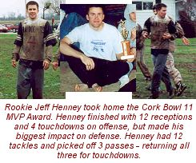mplish your dream of wearing the 
      Cork Bowl Championship ring AND to win the MVP is something I thought 
      beyond consideration," stated an emotional Henney. "I owe so much to my 
      teammates, who stuck with me, showed me the ropes, and believed in 
      me."</FONT></P>
      <P><FONT face=Arial color=#800040>"I guess we now know the Skinny on 
      Henney," remarked Kirby Newell. "He was definitely the reason they won the 
      game. Without those three interceptions for scores, the outcome could have 
      been different."</FONT></P>
      <P><FONT face=Arial color=#800040>"I would love to see what our team could 
      do in a rematch game," challenged Patrick Cork. "But we'll just have to 
      wait and see what the league can do this late in the year."</FONT></P>
      <P><FONT face=Arial color=#800040>If a rematch is not scheduled for 
      mid-Janaury, the next action at Corklestick will take place in November of 
      2002 for Cork Bowl 12.</FONT></P>
      <P><A href="corkbowl11stats.htm"><FONT 
      face=Arial>Cork Bowl 11 Stats</FONT></A></P>
      <P><B><I><FONT face=Arial color=#800040>From the League 
      Office</FONT></I></B></P>
      <P><FONT face=Arial color=#800040>In other league news, Greg Howard and 
      Chris Cork are facing possible fines/suspensions for their last-play 
      actions. Cork tackled Henney at the line of scrimmage on the final play, 
      and Howard drilled Steve Sanders in the back with a cheapshot as the 
      'Coots were running the clock out.</FONT></P>
      <P><FONT face=Arial color=#800040>"I don't think that crap is called for 
      in Cork Bowl," remarked an enraged Commissioner. "Chris will be facing a 
      fine situation because he did drag Jeff to the ground. We are truly 
      considering a suspension for Howard. To hit someone in the back like that, 
      especially someone with a well-publicized back injury coming into the 
      game, is completely uncalled for. And to make matters worse, he taunted 
      Steve by saying "I told you it was coming". Obviously Greg didn't feel he 
      could prove his point legally so he had to throw a cheapshot when the game 
      was over. Having played for 6 years now you would think he would respect 
      the game more than that."</FONT></P>
      <P><FONT face=Arial color=#800040>"The hit on Steve was totally uncalled 
      for," added Patrick. "Obviously Greg wasn't tough enough to do it during 
      the game, so he does it on the final play. That's the kind of stuff you 
      see in Pop Warner games when a team is getting killed. I mean seriously. 
      He's been talking about how much of a tough guy he is for a couple years 
      now and he goes out and does something cowardly like hitting someone in 
      the back and then taunts him like it was a great play. Heck, he drilled me 
      in the back twice during the game too as plays ended. If you're gonna hit 
      someone do it legally at least. Maybe a one-year suspension would be good 
      for him. That's not what Cork Bowl is all about."</FONT></P>
      <P><FONT face=Arial color=#800040>No official action has been taken on 
      either situation yet. The league will continue to study film and hopes to 
      reach a decision by early January.</FONT></P>
      <P><A href="the_scoop_preview.html"><FONT 
      face=Arial></FONT></A></P>
      <P><A 
      href="the_scoop_preview_01.html"><FONT 
      face=Arial>Click Here for The "Scoop's" Take on Cork Bowl 
XI</FONT></A></P>
      <P><A href="corkbowl11stats.htm"><FONT 
      face=Arial>Cork Bowl 11 Stats</FONT></A><FONT face=Arial><A 
      href="corkbowl11preview.html"><BR>Cork 
      Bowl 11 Preview</A></FONT></P>
      <P><A href="corkbowl10.html"><FONT 
      face=Arial>Click Here for Cork Bowl 10</FONT></A><BR><FONT face=Arial><A 
      href="corkbowlrules.html">The history and 
      rules of Cork Bowl</A></FONT><BR><FONT face=Arial><A 
      href="corkbowl9.html">Cork Bowl 
      9</A></FONT><BR><FONT face=Arial><A 
      href="corkbowl8.html">Cork Bowl 
      8</A></FONT><BR><FONT face=Arial><A 
      href="corkbowl8stats.htm">Scoring summary and 
      stats for Cork Bowl 8</A></FONT><BR><FONT face=Arial><A 
      href="corkbowl7stats.htm">Cork Bowl 7 
      stats</A></FONT><BR><FONT face=Arial><A 
      href="corkbowl6stats.htm">Cork Bowl 6 
      stats</A></FONT><FONT face=Arial color=#800040> <BR></FONT><FONT 
      face=Arial><A href="corkbowl5stats.htm">Cork 
      Bowl 5 stats</A></FONT><FONT face=Arial color=#800040> <BR></FONT><FONT 
      face=Arial><A href="corkbowl4stats.htm">Cork 
      Bowl 4 stats</A></FONT><BR><FONT face=Arial><A 
      href="corkbowl2stats.htm">Cork Bowl 2 
      stats</A></FONT><BR><FONT face=Arial><A 
      href="careerstats.html">Career Cork Bowl 
      stats from 1992, 1994-2001 (**updated 12-15-01)</A></FONT></P>
      
